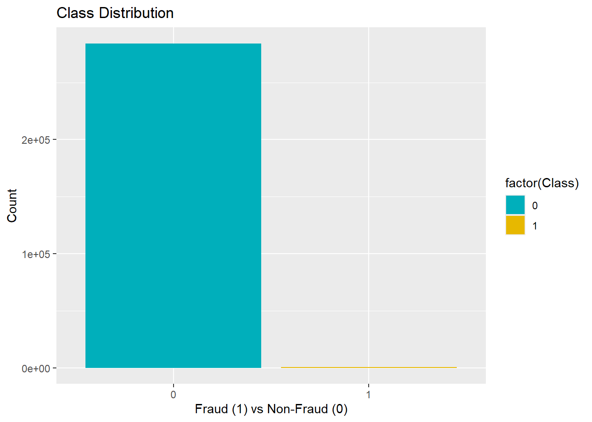

Attaching package: 'dplyr'The following objects are masked from 'package:stats':
filter, lagThe following objects are masked from 'package:base':
intersect, setdiff, setequal, union
Attaching package: 'dplyr'The following objects are masked from 'package:stats':
filter, lagThe following objects are masked from 'package:base':
intersect, setdiff, setequal, unionRows: 284807 Columns: 31
── Column specification ────────────────────────────────────────────────────────
Delimiter: ","
dbl (31): Time, V1, V2, V3, V4, V5, V6, V7, V8, V9, V10, V11, V12, V13, V14,...
ℹ Use `spec()` to retrieve the full column specification for this data.
ℹ Specify the column types or set `show_col_types = FALSE` to quiet this message.# A tibble: 6 × 31
Time V1 V2 V3 V4 V5 V6 V7 V8 V9
<dbl> <dbl> <dbl> <dbl> <dbl> <dbl> <dbl> <dbl> <dbl> <dbl>
1 0 -1.36 -0.0728 2.54 1.38 -0.338 0.462 0.240 0.0987 0.364
2 0 1.19 0.266 0.166 0.448 0.0600 -0.0824 -0.0788 0.0851 -0.255
3 1 -1.36 -1.34 1.77 0.380 -0.503 1.80 0.791 0.248 -1.51
4 1 -0.966 -0.185 1.79 -0.863 -0.0103 1.25 0.238 0.377 -1.39
5 2 -1.16 0.878 1.55 0.403 -0.407 0.0959 0.593 -0.271 0.818
6 2 -0.426 0.961 1.14 -0.168 0.421 -0.0297 0.476 0.260 -0.569
# ℹ 21 more variables: V10 <dbl>, V11 <dbl>, V12 <dbl>, V13 <dbl>, V14 <dbl>,
# V15 <dbl>, V16 <dbl>, V17 <dbl>, V18 <dbl>, V19 <dbl>, V20 <dbl>,
# V21 <dbl>, V22 <dbl>, V23 <dbl>, V24 <dbl>, V25 <dbl>, V26 <dbl>,
# V27 <dbl>, V28 <dbl>, Amount <dbl>, Class <dbl>| Column Name | Description |
|---|---|
| Time | Seconds elapsed between this transaction and the first transaction in the dataset. |
| V1 to V28 | Anonymized features resulting from a PCA transformation. |
| Amount | The transaction amount. |
| Class | Target variable (0 for legitimate transactions, 1 for fraudulent transactions). |
Time V1 V2 V3
Min. : 0 Min. :-56.40751 Min. :-72.71573 Min. :-48.3256
1st Qu.: 54202 1st Qu.: -0.92037 1st Qu.: -0.59855 1st Qu.: -0.8904
Median : 84692 Median : 0.01811 Median : 0.06549 Median : 0.1799
Mean : 94814 Mean : 0.00000 Mean : 0.00000 Mean : 0.0000
3rd Qu.:139321 3rd Qu.: 1.31564 3rd Qu.: 0.80372 3rd Qu.: 1.0272
Max. :172792 Max. : 2.45493 Max. : 22.05773 Max. : 9.3826
V4 V5 V6 V7
Min. :-5.68317 Min. :-113.74331 Min. :-26.1605 Min. :-43.5572
1st Qu.:-0.84864 1st Qu.: -0.69160 1st Qu.: -0.7683 1st Qu.: -0.5541
Median :-0.01985 Median : -0.05434 Median : -0.2742 Median : 0.0401
Mean : 0.00000 Mean : 0.00000 Mean : 0.0000 Mean : 0.0000
3rd Qu.: 0.74334 3rd Qu.: 0.61193 3rd Qu.: 0.3986 3rd Qu.: 0.5704
Max. :16.87534 Max. : 34.80167 Max. : 73.3016 Max. :120.5895
V8 V9 V10 V11
Min. :-73.21672 Min. :-13.43407 Min. :-24.58826 Min. :-4.79747
1st Qu.: -0.20863 1st Qu.: -0.64310 1st Qu.: -0.53543 1st Qu.:-0.76249
Median : 0.02236 Median : -0.05143 Median : -0.09292 Median :-0.03276
Mean : 0.00000 Mean : 0.00000 Mean : 0.00000 Mean : 0.00000
3rd Qu.: 0.32735 3rd Qu.: 0.59714 3rd Qu.: 0.45392 3rd Qu.: 0.73959
Max. : 20.00721 Max. : 15.59500 Max. : 23.74514 Max. :12.01891
V12 V13 V14 V15
Min. :-18.6837 Min. :-5.79188 Min. :-19.2143 Min. :-4.49894
1st Qu.: -0.4056 1st Qu.:-0.64854 1st Qu.: -0.4256 1st Qu.:-0.58288
Median : 0.1400 Median :-0.01357 Median : 0.0506 Median : 0.04807
Mean : 0.0000 Mean : 0.00000 Mean : 0.0000 Mean : 0.00000
3rd Qu.: 0.6182 3rd Qu.: 0.66251 3rd Qu.: 0.4931 3rd Qu.: 0.64882
Max. : 7.8484 Max. : 7.12688 Max. : 10.5268 Max. : 8.87774
V16 V17 V18
Min. :-14.12985 Min. :-25.16280 Min. :-9.498746
1st Qu.: -0.46804 1st Qu.: -0.48375 1st Qu.:-0.498850
Median : 0.06641 Median : -0.06568 Median :-0.003636
Mean : 0.00000 Mean : 0.00000 Mean : 0.000000
3rd Qu.: 0.52330 3rd Qu.: 0.39968 3rd Qu.: 0.500807
Max. : 17.31511 Max. : 9.25353 Max. : 5.041069
V19 V20 V21
Min. :-7.213527 Min. :-54.49772 Min. :-34.83038
1st Qu.:-0.456299 1st Qu.: -0.21172 1st Qu.: -0.22839
Median : 0.003735 Median : -0.06248 Median : -0.02945
Mean : 0.000000 Mean : 0.00000 Mean : 0.00000
3rd Qu.: 0.458949 3rd Qu.: 0.13304 3rd Qu.: 0.18638
Max. : 5.591971 Max. : 39.42090 Max. : 27.20284
V22 V23 V24
Min. :-10.933144 Min. :-44.80774 Min. :-2.83663
1st Qu.: -0.542350 1st Qu.: -0.16185 1st Qu.:-0.35459
Median : 0.006782 Median : -0.01119 Median : 0.04098
Mean : 0.000000 Mean : 0.00000 Mean : 0.00000
3rd Qu.: 0.528554 3rd Qu.: 0.14764 3rd Qu.: 0.43953
Max. : 10.503090 Max. : 22.52841 Max. : 4.58455
V25 V26 V27
Min. :-10.29540 Min. :-2.60455 Min. :-22.565679
1st Qu.: -0.31715 1st Qu.:-0.32698 1st Qu.: -0.070840
Median : 0.01659 Median :-0.05214 Median : 0.001342
Mean : 0.00000 Mean : 0.00000 Mean : 0.000000
3rd Qu.: 0.35072 3rd Qu.: 0.24095 3rd Qu.: 0.091045
Max. : 7.51959 Max. : 3.51735 Max. : 31.612198
V28 Amount Class
Min. :-15.43008 Min. : 0.00 Min. :0.000000
1st Qu.: -0.05296 1st Qu.: 5.60 1st Qu.:0.000000
Median : 0.01124 Median : 22.00 Median :0.000000
Mean : 0.00000 Mean : 88.35 Mean :0.001728
3rd Qu.: 0.07828 3rd Qu.: 77.17 3rd Qu.:0.000000
Max. : 33.84781 Max. :25691.16 Max. :1.000000 [1] 0
0 1
284315 492 